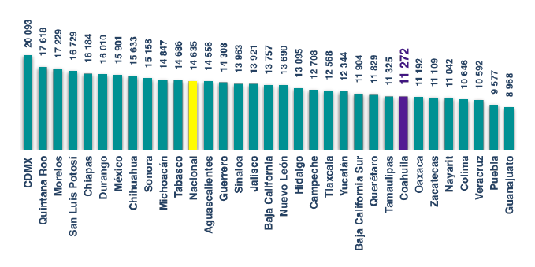
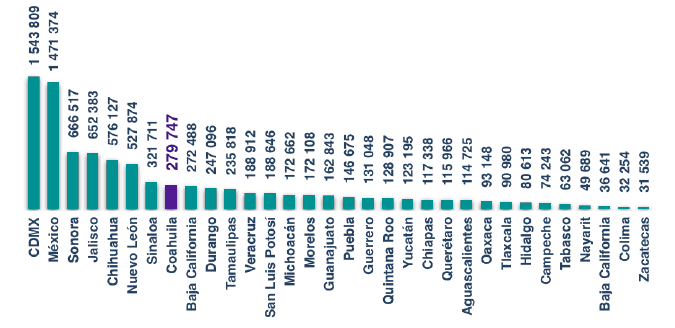
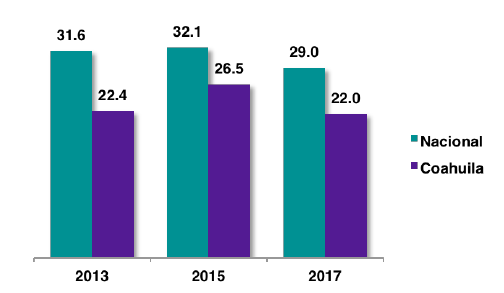

Descargar
Consejo de Participación Ciudadana
Sistema Anticorrupción del Estado de Coahuila de Zaragoza
Programa de Trabajo 2018-2019
Saltillo, Coahuila, México. Diciembre 2018
Directorio
Consejo de Participación Ciudadana Sistema Anticorrupción del Estado de Coahuila de Zaragoza
- Ana Yuri Solís Gaona - Presidenta
- Maria de Lourdes de Koster López - Consejera
- Juan Adolfo Von Bertrab Saracho - Consejero
- Carlos Rangel Orona - Consejero
- Jafia Pacheco Valtierra - Consejera
Índice
- Introducción
- Marco Legal
- Diagnóstico
- Objetivo General
- Objetivos estratégicos y líneas de acción
- Mecanismos de seguimiento y evaluación
Acrónimos
- CC. Comité Coordinador
- CE. Comisión Ejecutiva
- CPC. Consejo de Participación Ciudadana
- SEA. Sistema Anticorrupción del Estado de Coahuila de Zaragoza
- SEI. Sistema Estatal de Información
- SNA. Sistema Nacional Anticorrupción
Introducción
14 de julio de 2017 se publicó en el Periódico Oficial de Coahuila la Ley del Sistema Anticorrupción del Estado de Coahuila, deriada de la reforma constitucional del estado, cuyo objeto es establecer las bases de coordinación entre las autoridades de todos los Entes Públicos del estado, para la integración, organización y funcionamiento del Sistema Estatal Anticorrupción, con el fin de prevenir, y sancionar las faltas administrativas, y los hechos de corrupción, así como investigar la fiscalización y control de recursos públicos, de conformidad con lo que establece la Constitución Política de los Estados Unidos Mexicanos, la Ley General del Sistema Nacional Anticorrupción, la Constitución Política del Estado de Coahuila de Zaragoza, y demás disposiciones legales aplicables.
El Sistema Anticorrupción del Estado de Coahuila está integrado por el Comité Coordinador (CC), El Comité de Participación Ciudadana (CPC), y los municipios quienes concurrirán a través de sus representantes.
El Comité Coordinador es la instancia responsable de establecer mecanismos de coordinación entre los integrantes del Sistema Estatal, y de éste con el Sistema Nacional, y tendrá bajo su encargo el diseño, promoción y evaluación de políticas públicas locales de prevención y combate a la corrupción; está integrado por el Presidente del Consejo de Participación Ciudadana, quien lo presidirá; la Auditoría Superior del Estado; la Fiscalía Especializada en Delitos por Hechos de Corrupción del Estado; la Secretaría de Fiscalización y Rendición de Cuentas; el Consejo de la Judicatura; el Instituto Coahuilense de Acceso a la Información Pública, y el Tribunal de Justicia Administrativa de Coahuila de Zaragoza.
Por su parte, el Consejo de Participación Ciudadana, tiene como objetivo encauzar, el cumplimiento de los objetivos del Comité Coordinador, así como ser la instancia de vinculación con las organizaciones sociales y académicas relacionadas con las materias del Sistema Estatal.
Entre las facultades del CPC está el elaborar su programa de trabajo anual, y su correspondiente informe, en el que se contemplen las acciones, proyectos de bases de coordinación interinstitucional e intergubernamental, y propuestas, en las materias de fiscalización y control de recursos públicos, de prevención, control y disuasión de faltas administrativas y hechos de corrupción, en especial sobre las causas que los generan. Es importante la efectiva coordinación con el Comité Coordinador y la incidencia del componente ciudadano en la conformación de las recomendaciones y políticas públicas que se consideren necesarias para el buen funcionamiento del Sistema.
Además, el CPC es el encargado de desarrolar proyectos de mejora a los instrumentos, lineamientos y mecanismos para la operación del Sistema Estatal de Información y su coordinación para la integración de la información del estado a la Plataforma Digital Nacional.
Los objetivos y acciones que se plasman en el Programa de Trabajo 2018-19, del Consejo de Participación Ciudadana, surgen de la participación activa y consulta de académicos, empresarios e integrantes de la sociedad civil en general.
Para dar seguimiento a las actividades del Programa se formará un Comité Técnico que evalúe el avance de los objetivos y acciones, y en su caso, se ajusten para el efectivo cumplimiento de la vinculación, toma de decisiones e indicencia pública.
Marco Legal
El 27 de mayo de 2015 se reconoció al combate de la corrupción en el más alto ordenamiento jurídico de nuestro país, con la reforma al artículo 113 de la Constitución Política de los Estados Unidos Mexicanos y la creación del Sistema Nacional Anticorrupción, con su correspondiente Ley General, que se publica en el Diario Oficial de la Federación, el 18 de julio de 2016, cuyo objeto es establecer las bases de coordinación entre la Federación, las entidades federativas, los municipios, y las alcaldías de la Ciudad de México.
La promulgación de la Reforma Constitucional que crea el Sistema Nacional Anticorrupción (SNA), y la Reforma Constitucional del Estado de Coahuila que crea su correspondiente Ley estatal, representan un avance histórico en la lucha contra la corrupción.
Mientras que la Ley del Sistema Anticorrupción del Estado de Coahuila fue publicada en julio de 2017, es de orden público, de observancia general en el Estado, y tiene por objeto establecer las bases de coordinación entre las autoridades de todos los Entes Públicos del estado, para la integración, organización y funcionamiento del Sistema Estatal Anticorrupción, con el fin de prevenir, y sancionar las faltas administrativas, y los hechos de corrupción, así como investigar la fiscalización y control de recursos públicos, de conformidad con lo que establece la Constitución Política de los Estados Unidos Mexicanos, la Ley General del Sistema Nacional Anticorrupción, la Constitución Política del Estado de Coahuila de Zaragoza, y demás disposiciones legales aplicables.
Los objetivos de la Ley del Sistema Anticorrupción del Estado de Coahuila son:
I. Integrar al Estado de Coahuila de Zaragoza al Sistema Nacional Anticorrupción;
II. Establecer las bases de coordinación entre los organismos que integran el Sistema Estatal con los municipios del estado;
III. Establecer las bases mínimas para la emisión de políticas públicas integrales en la prevención y combate a la corrupción, así como en la fiscalización y control de los recursos públicos;
IV. Establecer las directrices básicas que definan la coordinación de las autoridades competentes para la generación de políticas públicas en materia de prevención, detección, control, sanción, disuasión y combate a la corrupción;
V. Regular la organización y funcionamiento del Sistema Estatal, su Comité Coordinador y su Secretaría Ejecutiva, así como establecer las bases de coordinación entre sus integrantes;
VI. Establecer las bases, principios y procedimientos para la organización y funcionamiento del Consejo de Participación Ciudadana;
VII. Establecer las bases y políticas para la promoción, fomento y difusión de la cultura de integridad en el servicio público, así como de la rendición de cuentas, de la transparencia, de la fiscalización y del control de los recursos públicos;
VIII.Establecer las bases de coordinación del Sistema Estatal con el Sistema Nacional Anticorrupción;
IX. Armonizar las bases mínimas que para la creación e implementación de sistemas electrónicos establece la Ley General del Sistema Nacional Anticorrupción para el suministro, intercambio, sistematización y actualización de la información que generen las instituciones competentes en el estado y sus municipios con las atribuciones y capacidades del estado y sus municipios.
El Sistema Anticorrupción del Estado de Coahuila, coordina a las autoridades estatales y municipales, para que prevengan, investiguen y sanciones las faltas administrativas y los hechos de corrupción.
Coordinación entre instituciones y órdenes de gobierno
El Comité Coordinador constituye el núcleo del SAC. Como función principal, este órgano tiene que establecer mecanismos eficientes de coordinación y colaboración entre las instancias que forman parte del sistema. La trascendencia de este órgano recae en la posibilidad de encauzar las diferentes funciones de los siete miembros, para construir un verdadero sistema generador de política de Estado.
El Comité Coordinador en Coahuila esta integrado por:
I. El Presidente del CPC, quien lo presidirá; y los titulares de
II. La Auditoría Superior del Estado;
III. La Fiscalía Especializada en Delitos por Hechos de Corrupción del Estado;
IV. La Secretaría de Fiscalización y Rendición de Cuentas; presidentes del
V. Consejo de la Judicatura;
VI. Instituto Coahuilense de Acceso a la Información Pública, y
VII. Tribunal de Justicia Administrativa de Coahuila de Zaragoza.
Por otra parte, se crea el Consejo de Participación Ciudadana que el rector del sistema y el canal de interacción entre la sociedad civil y las instituciones de gobierno.
La introducción de este órgano al Sistema Anticorrupción constituye la posibilidad por parte de los ciudadanos de dirigir los esfuerzos contra la corrupción.
La Constitución Política del Estado de Coahuila de Zaragoza y la Ley del Sistema Anticorrupción de Coahuila dotaron del poder de dirigir los esfuerzos en contra de la corrupción y de liderar el sistema a los ciudadanos a través de los cinco representantes miembros del Comité.
Los integrantes del Consejo de Participación Ciudadana son nombrados por una Comisión de Selección constituida, previamente, por el Congreso del Estado.
La Comisión de Selección del CPC en Coahuila la conforman nueve ciudadanos que gozan de probidad y prestigio. El cargo de miembro de la Comisión de Selección es honorario. Quienes funjan como miembros no podrán ser designados como integrantes del Consejo de Participación Ciudadana por un periodo de seis años contados a partir de la disolución de la Comisión de selección.
El Consejo de Participación Ciudadana tendrá las siguientes atribuciones:
I. Aprobar sus normas de carácter interno;
II. Elaborar su programa de trabajo anual;
III. Aprobar el informe anual de las actividades que realice en cumplimiento a su programa anual de trabajo, mismo que deberá ser público;
IV. Participar en la Comisión Ejecutiva en términos de esta ley;
V. Acceder sin ninguna restricción, por conducto del Secretario Técnico, a la información que genere el Sistema Estatal;
VI. Opinar y realizar propuestas, a través de su participación en la Comisión Ejecutiva, sobre la política estatal y las políticas integrales;
VII. Proponer al Comité Coordinador, a través de su participación en la Comisión Ejecutiva, para su consideración:
a) Proyectos de bases de coordinación interinstitucional e intergubernamental en las materias de fiscalización y control de recursos públicos, de prevención, control y disuasión de faltas administrativas y hechos de corrupción, en especial sobre las causas que los generan;
b) Proyectos de mejora a los instrumentos, lineamientos y mecanismos para la operación del Sistema Estatal de Información y su coordinación para la integración de la información del estado a la Plataforma Digital Nacional;
c) Proyectos de mejora a los instrumentos, lineamientos y mecanismos para el suministro, intercambio, sistematización y actualización de la información que generen las instituciones competentes de los diversos órdenes de gobierno en las materias reguladas por esta ley;
d) Proyectos de mejora a los instrumentos, lineamientos y mecanismos requeridos para la operación del sistema electrónico de denuncia y queja.
VIII. Proponer al Comité Coordinador, a través de su participación en la Comisión Ejecutiva, mecanismos para que la sociedad del estado participe en la prevención y denuncia de faltas administrativas y hechos de corrupción;
IX. Llevar un registro voluntario de las organizaciones de la sociedad civil que deseen colaborar de manera coordinada con el Consejo de Participación Ciudadana para establecer una red de participación ciudadana, conforme a sus normas de carácter interno;
X. Opinar o proponer, a través de su participación en la Comisión Ejecutiva, indicadores y metodologías para la medición y seguimiento del fenómeno de la corrupción, así como para la evaluación del cumplimiento de los objetivos y metas de la política estatal y las políticas integrales y los programas y acciones que implementen las autoridades que conforman el Sistema Estatal;
XI. Proponer mecanismos de articulación entre organizaciones de la sociedad civil, la academia y grupos ciudadanos;
XII. Proponer reglas y procedimientos mediante los cuales se recibirán las peticiones, solicitudes y denuncias fundadas y motivadas que la sociedad civil pretenda hacer llegar a la Secretaría de Fiscalización y Rendición de Cuentas;
XIII. Opinar sobre el programa anual de trabajo del Comité Coordinador;
XIV. Realizar observaciones, a través de su participación en la Comisión Ejecutiva, a los proyectos de informe anual del Comité Coordinador;
XV. Proponer al Comité Coordinador, a través de su participación en la Comisión Ejecutiva, la emisión de recomendaciones no vinculantes;
XVI. Promover la colaboración con instituciones en la materia, con el propósito de elaborar investigaciones sobre las políticas públicas para la prevención, detección y combate de hechos de corrupción o faltas administrativas en el estado;
XVII. Dar seguimiento al funcionamiento del Sistema Estatal; y,
XVIII. Proponer al Comité Coordinador mecanismos para facilitar el funcionamiento de las instancias de contraloría social existentes, así como para recibir directamente información generada por esas instancias y formas de participación ciudadana.
Diagnóstico
La corrupción puede definirse de una manera simple, como el abuso del poder para beneficio propio. Generalmente, se estudia el fenómeno de la corrupción en pequeña y gran escala.
La pequeña corrupción, esta relacionada con el abuso, por parte de funcionarios publicos, en las solicitudes ciudadanas de trámites y servicios en ventanilla, y generalmente, se presenta en los ámbitos escolar, de salud, policiacos, permisos, entre otros.
La gran corrupción, se refiere a actos cometidos por fucionarios que tienen mayor rango en la toma de decisiones públicas, por ejemplo, los que se involucran en la distorisión de políticas, instituciones o funciones centrales del Estado.
Respecto a los datos disponibles para dimensionar y cuantificar el fenómeno de la corrupción, contamos de dos tipos, los basados en la percepción y opinión de informantes, y aquellos directamente observables o cuantificables. Cabe destacar que los primeros, requieren de una cuidadosa y objetiva interpretación para no sobreestimar o subestimar el fenómeno, por otro lado, los hechos, por si mismos, tienen la característica que representan una pequeña parte de ellos, principalmente por tratarse de actos que suceden en la clandestinidad.
Los datos, nos indican que la corrupción es uno de los principales temas de preocupación en el mundo, son muy pocos los países que tienen un avance importente en el combate a la corrupción, sin embargo, la clave, ha sido cómo la han enfrentado.
Según el Foro Económico Mundial, en su Reporte de Crecimiento y Desarrollo Inclusivo 2017 (Acosta, Corinna, 2017. Los 9 mejores países en la lucha contra la corrupción. https://www.expoknews.com/los-paises-con-mejores-politicas-anticorrupcion/), la lista con los países con mayor éxito en el combate a la corrupción son: Singapur y Dinamarca, que pusieron en marcha oficinas de investigación en prácticas corruptas; Suiza, con multas significativa a empresas y trabajadores que ofrecen sobornos; Nueva Zelanda, con un grupo de agencias especializadas en la lucha contra la corrupción; Noruega, es un país que tiene penas grandes a delitos como el tráfico de influencias, la extorción o el desvío de recursos; Finlandia; Suecia, que implementó la Unidad Anticorrupción Nacional, que forma parte de su Fiscalía General; Japón; y Luxemburgo, que realiza efectivas investigaciones de evasión fisca por parte de algunas empresas multinacionales y sus robustas políticas anticorrupción.
Por su parte, la Secretaría de la Función Pública en México, realizó un análisis de mejores prácticas en el combate a la corrupción (https://www.gob.mx/sfp/documentos/definicion-de-corrupcion): Australia, con la Comisión Independiente contra la Corrupción (ICAC); China, con el mismo modelo de Australia, con un enfoque sistémico, y que se centra en la prevención, investigación y educación pública para combatir la corrupción, así como un sistema judicial de integridad; Colombia, implementó el Programa Presidencial de Lucha contra la Corrupción para atacar las causas estructurales del problema, mediante la articulación de Corporaciones Autónomas Regionales y municipios, con la participación de la sociedad civil, organos internos de control, Fiscalía General, Consejo Superior de la Judicatura y la Defensoría del Pueblo, entre otros actores.; Kenia, promulgó la Ley de Ética de los Funcionarios Públicos y otros códigos de conducta en el sector privado; Panamá, que emitió una Guía para la Incorporación de las Instituciones Públicas al Sistema de Buenas Prácticas de Integridad de Panamá; entre otros.
A continuación, muestran algunos datos para Coahuila, y algunos municipios con representatividad estadística, respecto a la percepción de la corrupción, de ciudadanos y de funcionarios de empresas, así como de de registros administrativos relacionados con los delitos que se comenten por parte de autoridades de gobierno.
Dimensión de la corrupción
En Coahuila, de acuerdo con estimaciones de la Encuesta Nacional de Calidad e Impacto Gubernamental de INEGI, 6 de cada 10 personas mayores de 18 años, declararon que la corrupción es el principal tema de preocupación en su Estado, percepción que va en aumento, al menos, en los últimos cinco años (Gráfico 1).
Gráfico 1
Evolución de la percepción de corrupción en México y Coahuila 2011 a 2017
Fuente: INEGI. Encuesta Nacional de Calidad e Impacto Gubernamental (ENCIG) 2011, 2013, 2015 y 2017.
En los años 2011, 2013 y 2015, la corrupción representó el segundo problema de mayor preocupación en Coahuila, el primero fue la inseguridad, mientras que en ámbito nacional los dos principales problemas fueron la inseguridad y el desempleo en los años 2011 y 2013 (Tabla 1)
Tabla 1
Posición que ocupa el tema de corrupción dentro de los problemas sociales
| Año | Nacional | Coahuila |
|---|---|---|
| 2011 | 3 | 2 |
| 2013 | 3 | 2 |
| 2015 | 2 | 2 |
| 2017 | 2 | 1 |
Fuente: INEGI. Encuesta Nacional de Calidad e Impacto Gubernamental (ENCIG) 2011, 2013, 2015 y 2017.
El Gráfico 2, nos permite observar que en Coahuila, el 85.9 por ciento de la población considera que la corrupción se manifiesta de manera muy frecuente o frecuente, mientras que el promedio nacional es del 91.1 por ciento y nos coloca en el lugar número 24, esto pudiera significar que el estado se perciba como un tema de mayor escala que de pequeños casos de corrupción.
Gráfico 2
Percepción sobre frecuencia de la corrupción por entidad, 2017 (Muy frecuente y frecuente)
Fuente: INEGI. Encuesta Nacional de Calidad e Impacto Gubernamental (ENCIG) 2017.
Gráfico 3
Tasa de prevalencia de corrupción, por cada 100 mil habitantes, 2017
Gráfico 4
Tasa de prevalencia de corrupción por cada 100 mil habitantes 2017

Fuente: INEGI. Encuesta Nacional de Calidad e Impacto Gubernamental (ENCIG) 2017.
Mapa 1
Víctimas de corrupción en México y Coahuila, 2017
Fuente: INEGI. Encuesta Nacional de Calidad e Impacto Gubernamental (ENCIG) 2017.
Gráfico 5
Tasa de incidencia de corrupción, 2017
Nota: La incidencia se obtuvo dividiendo los trámites en los que existió experiencia de corrupción entre la población que tuvo contacto con algún servidor público, multiplicada por 100,000. Fuente: INEGI. Encuesta Nacional de Calidad e Impacto Gubernamental 2017 (ENCIG).
Gráfico 6
Total trámites en los que existió corrupción, 2017
Total de trámites: 9;110,138

Fuente: INEGI. Encuesta Nacional de Calidad e Impacto Gubernamental 2017 (ENCIG).
Tabla 2
Costo promedio de la corrupción, 2017
| Descripción | Nacional | Coahuila |
|---|---|---|
| Personas con afectaciones a consecuencia de la corrupción | 3;175,921 | 88,079 |
| Costo a consecuencia de corrupción | 7,217;848,391 | 167;271,240 |
| Promedio de costo a consecuencia de corrupción | 2,273 | 1,899 |
Fuente: INEGI. Encuesta Nacional de Calidad e Impacto Gubernamental 2017 (ENCIG).
Gráfico 7
Costo promedio de la corrupción, 2017
Fuente: INEGI. Encuesta Nacional de Calidad e Impacto Gubernamental 2017 (ENCIG).
Gráfico 8
Cifra negra del delito de corrupción, 2017
Fuente: INEGI. Encuesta Nacional de Calidad e Impacto Gubernamental 2017 (ENCIG).
Mapa 2
Denuncia de los actos de corrupción, 2017
Fuente: INEGI. Encuesta Nacional de Calidad e Impacto Gubernamental 2017 (ENCIG).
Gráfico 9
Percepción sobre frecuencia de la corrupción por sectores, 2017
Fuente: INEGI. Encuesta Nacional de Calidad e Impacto Gubernamental 2017 (ENCIG).
Gráfico 10
Población con al menos una interacción con el gobierno a través de medios electrónicos (%), 2017
Fuente: INEGI. Encuesta Nacional de Calidad e Impacto Gubernamental 2017 (ENCIG).
Gráfico 11
Población con al menos una interacción con el gobierno a través de medios electrónicos (%), 2013, 2015 y 2017

Fuente: INEGI. Encuesta Nacional de Calidad e Impacto Gubernamental 2017 (ENCIG).
Gráfico 12
Población con al menos una interacción con el gobierno a través de medios electrónicos según objetivo de la interacción, 2017
Fuente: INEGI. Encuesta Nacional de Calidad e Impacto Gubernamental 2017 (ENCIG).
Objetivo general
Articular y encauzar los esfuerzos ciudadanos e institucionales para la formulación, ejecución, seguimiento y evaluación de políticas públicas que coadyuven de manera efectiva al control de la corrupción, en el marco del Sistema Anticorrupución del Estado de Coahuila.
Objetivo estratégico 1. Participación ciudadana
Incrementar la participación ciudadana y fortalecer las capacidades de las orgnizaciones de la sociedad civil, empresarial y del ámbito académico, para alcanzar mayor incidencia en la toma de decisiones de los temas relacionados al control de la corrupción.
Líneas de acción:
1.1 Realizar una consulta en distintos ámbitos sociales, empresariales y académicos para la integración de la Política Nacional Anticorupción y la del Estado de Coahuila.
1.2 Establecer una Red de Participación Ciudadana que de seguimiento a las acciones del Sistema Anticorrupción de Coahula.
1.3 Capacitar a diferentes sectores de las sociedad sobre: los alcances y retos del Sistema Anticorrupción en su conjunto; en las materias de transparencia, fiscalización, rendicion de cuentas y combate a la corrupción; así como de, herramientas metodológicas, indicadores y del uso dela tecnología para la indicencia de la participación ciudadana en política pública.
1.4 Acompañar a las organizaciones de la sociedad civil, grupos ciudadanos, colectivos, sector privado y académicos, en el desarrollo de propuestas de políticas públicas para que se promuevan en el marco del Sistema Anticorrupción del Estado de Coahuila.
1.5 Dar seguimiento a las recomendaciones que emitan los organismos de sociedad civil, empresarial y académicos sobre los temas relacionados al control de la corrupción.
Objetivo específico 2. Coordinación
Coordinar acciones para la adecuada implementación del Sistema Anticorrupción del Estado de Coahuila y su vinculación con el Sistema Nacional Anticorrupción y los municipios del Estado.
Líneas de acción:
1.1 Presidir y dar seguimiento a los acuerdos y recomendaciones adoptados en las sesiones del Comité Coordinador del Sistema Anticorrupción, así como presidir el órgano de gobierno de la Secretaría Ejecutiva.
1.2 Opinar sobre el informe anual de resultados del Comité Coordinador.
1.3 Proponer al Comité Coordinador, a través de la Comisión Ejecutiva, los proyectos técnicos, de mejora a los instrumentos, lineamientos y mecanismos para la operación del Sistema Estatal, así como de coordinación en las materias de fiscalización y control de recursos públicos, de prevención, control y disuasión de faltas administrativas y hechos de corrupción.
1.4 Elaborar propuestas de políticas públicas para la prevención, detección y combate de hechos de corrupción o faltas administrativas en el Estado.
1.5 Realizar observaciones, a través de su participación en la Comisión Ejecutiva, a los proyectos de informe anual del Comité Coordinador.
1.6 Establecer alianzas con organismos nacionales e internacionales para la colaboración, capacitación, asistencia técnica y financiamiento en el desarrollo de proyectos relacionados a la participación ciudana y el control de la corrupción en el estado.
Objetivo estratégico 3. Sistema de Prevención, Denuncia y Queja
Poner a disposición de los ciudadanos herramientas para la promoción de la prevención, denuncia y queja, en materia de actos corrupción.
Líneas de acción:
3.1 Proponer reglas y procedimientos mediante los cuales se recibirán las peticiones, solicitudes y denuncias fundadas y motivadas que la sociedad civil pretenda hacer llegar a las instituciones correspondientes.
3.2 Solicitar al Comité Coordinador del SAC la aclaración pública sobre la emisión de exhortos, que a petición de la ciudadanía, emita el CPC. Los exhortos tendrán por objeto requerir a las autoridades competentes información sobre la atención al asunto de que se trate.
Objetivo estratégico 4. Sistema Estatal de Información
Dar seguimiento al funcionamiento del Sistema Estatal de Información.
4.1 Realizar proyectos de mejora a los instrumentos, lineamientos y mecanismos para la operación del Sistema Estatal de Información y su coordinación para la integración de la información del estado a la Plataforma Digital Nacional.
4.2 Sugerir proyectos de mejora a los instrumentos, lineamientos y mecanismos para el suministro, intercambio, sistematización y actualización de la información que generen las instituciones competentes de los diversos órdenes de gobierno.
4.3 Opinar o proponer, indicadores y metodologías para la medición y seguimiento del fenómeno de la corrupción, así como para la evaluación del cumplimiento de los objetivos y metas de la política estatal y las políticas integrales y los programas y acciones que implementen las autoridades que conforman el Sistema Estatal.
Mecanismo de seguimiento y evaluación del Programa 2018-19
El Consejo de Participación Ciudadana, pone a disposición de la sociedad en general, la información correspondiente a sus acciones emprendidas en el marco del Sistema Anticorrupción del Estado de Coahuila, a través del sitio de internet cpccoahuila.org.mx.
Los apartados que dan seguimiento a las aciones, en dicho sitio son: boletines que reseñan las actividades emprendidas y un apartado de indicadores de gestión que monitorea el avande del Programa de Trabajo del CPC 2018-19.
El CPC realizará consultas ciudadanas que permitan dar seguimiento a las acciones, y de esta manera, también, evalúen la efectividad, congruencia y pertinencia de lo estipulado en la Ley del Sistema Anticorrupción del Estado de Coahuila.
El CPC informará sobre las acciones plasmadas en el Programa y su correspondiente evaluación e integrará un informe anual.